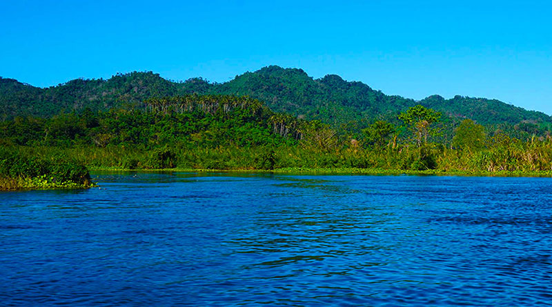

Park Profile • Oriental Mindoro
Naujan Lake National Park
Naujan Lake is an important wetland for birds and other wildlife. Observe animals quietly, keep distance, and avoid littering or disturbing habitats.
Naujan Lake is a freshwater lake in the Philippines located in the northeastern corner of the province of Oriental Mindoro on Mindoro Island. The lake is the fifth largest in the country and the main geographical feature of the Naujan Lake National Park. The entire area is a Ramsar Wetland Site since 1999.
The lake is bounded by the towns of Naujan to the north and northeast, Victoria to the west, Socorro to the south and southeast, and Pola to the east. The lake is also bounded by the Naujan Mountains to the north and east of the lake. Mount Naujan, elevation 1,380 feet (420 m) and one of the inactive volcanoes of the country, is situated northeast of the geographic center of the lake. Several thermal springs and solfataras are reported to exist on the eastern border of the Naujan Lake.
Helpful reminders
- Check official park announcements and local weather before visiting.
- Follow posted rules and instructions from park staff or guides.
- Respect nature and local communities; take all trash with you.